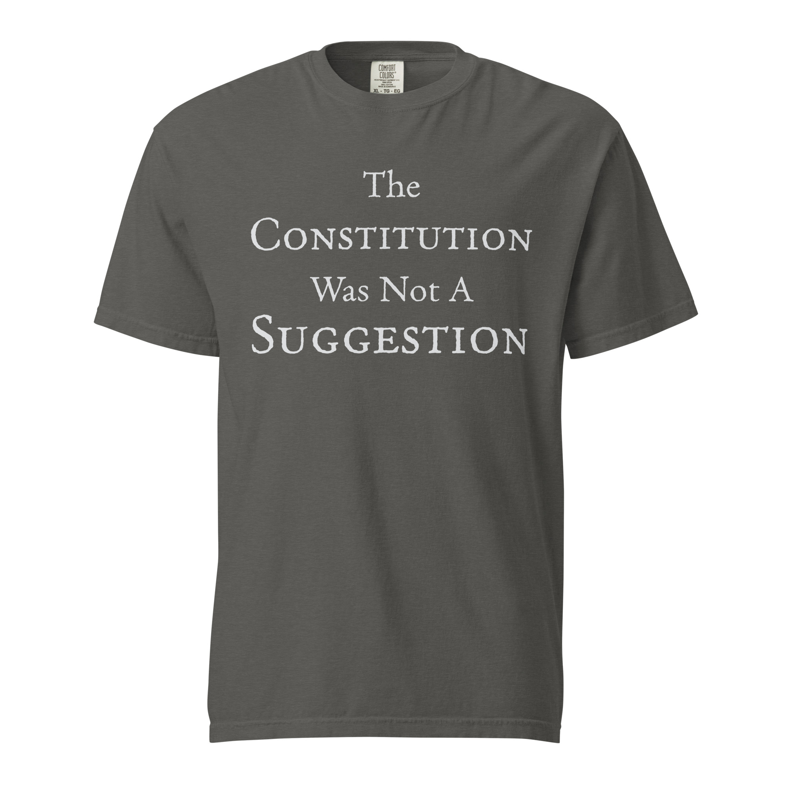

The Constitution Was Not a Suggestion
A direct statement for people who believe constitutional limits are real, binding, and worth defending.
The Republic
A nation of laws sustained by citizens who defend the Constitution.
America was not founded as a pure democracy driven by impulse. It was ordered as a constitutional republic, which means public power is limited, divided, and bound by law.
That structure exists for a reason. Liberty does not survive on goodwill alone. It survives when government is restrained before it can become arbitrary.
Angry Abe treats the Constitution as the operating boundary of the republic, not as a ceremonial document to be quoted and then ignored. Law protects liberty precisely because it limits what power may do.
The republic endures only if citizens are willing to preserve it. Institutions matter, but so does public seriousness. If the people stop defending constitutional limits, no text can defend itself.
The Founders wrote the Constitution with deliberate checks, separated powers, and written limits because they understood human nature. Power expands when it is not restrained.
Lincoln faced the greatest constitutional crisis in American history and still treated the Constitution as the anchor of the republic. He understood that if the nation abandoned its governing framework whenever pressure rose, it would preserve nothing worth keeping.
That is the standard here: constitutional seriousness, not selective convenience. A republic remains free only when law applies even when it is inconvenient.
Current Shirt

A direct statement for people who believe constitutional limits are real, binding, and worth defending.
This design is not just a slogan. It is a reminder that the constitutional framework was written to restrain power before it becomes abuse.
The statement is blunt because the principle is not ambiguous. The republic depends on citizens who still recognize the difference between law and preference.